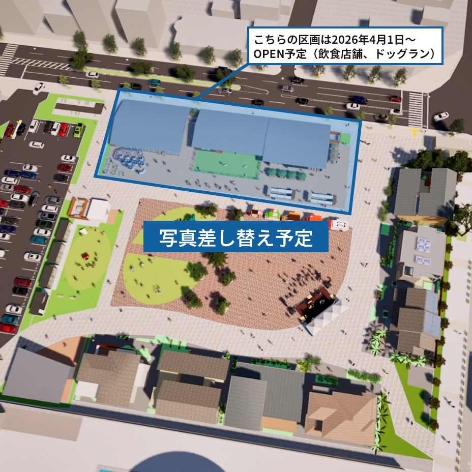

<section>
  <div class="top-sec-2">
    <div class="top-sec-2__inr">
      <div class="blks-1">
        <h2 class="h m-h-1">ABOUT</h2>
        <p class="logo"></p>
      </div><!-- / .blks-1 -->
      <div class="blks-2">
        <div class="col2">
          <div class="col2__lt">
            <div class="slider m-slider-1">
              <div class="m-slider-1__inr">
                <div class="swiper-container js-aslider">
                  <div class="swiper-wrapper">
                    <div class="swiper-slide"></div>
                    <div class="swiper-slide"></div>
                    <div class="swiper-slide"></div>
                    <div class="swiper-slide"></div>
                    <div class="swiper-slide"></div>
                    <div class="swiper-slide"></div>
                  </div>
                </div>
                <div class="m-slider-1__next js-asliderNext"></div>
                <div class="m-slider-1__prev js-asliderPrev"></div>
              </div>
              <div class="m-slider-1__pagination js-asliderPagination"></div>
            </div>
          </div>
          <div class="col2__rt">
            <p class="txt">2032年1月で役目を終え、<br class="sponly">次にバトンをつなぐ期間限定施設</p>
            <h3 class="h">Re.Nova（リノヴァ）の意味</h3>
            <div class="txt-2">
              <p>総合環境再生企業である日本リグランドの<em>Re</em>を用いながら、<br class="pconly">再生だけでは留まらない事業展開を皆様に感じて頂きたく、<br class="pconly">新たな<em>Re</em>の想いを施設名称に込めました。</p>
            </div>
            <div class="dlist">
              <dl class="dlist__item">
                <dt class="dlist__item__ttl"><span>Relax</span></dt>
                <dd class="dlist__item__dtl">憩い</dd>
              </dl>
              <dl class="dlist__item">
                <dt class="dlist__item__ttl"><span>Relation</span></dt>
                <dd class="dlist__item__dtl">つながり</dd>
              </dl>
              <dl class="dlist__item">
                <dt class="dlist__item__ttl"><span>Reflect</span></dt>
                <dd class="dlist__item__dtl">文化の振り返り、対話</dd>
              </dl>
            </div>
            <div class="txt-3">
              <p><em>Nova</em>はラテン語で〜新しい・新星〜の意味を持ちます。</p>
              <p>地域住民の皆様やお立ち寄り頂く方々に歴史と未来の彩りを感じて頂き、<br class="pconly">現在を創造する豊かな時間をお過ごし頂けるような施設設計、運営に努めて参ります。</p>
            </div>
          </div>
        </div>
      </div><!-- / .blks-2 -->
    </div><!-- / .top-sec-2__inr -->
  </div><!-- / .top-sec-2 -->
</section>